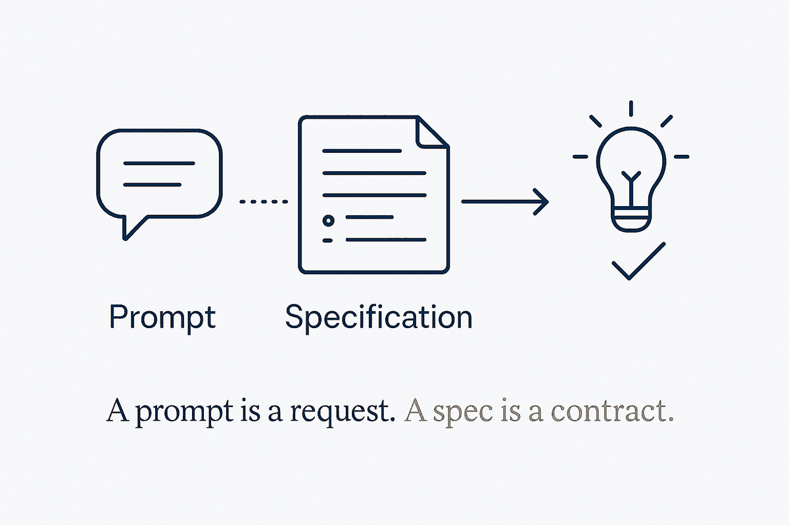

A prompt is a request you repeat. A spec is a contract the work is checked against — and it is the artefact that survives the session.

Prompting optimises a single request: better wording, better examples, better framing. It works, and it evaporates. The next task starts from nothing, the improvement lives in one person's habits, and the only record of what "good" meant is the output you happened to accept.
A specification does something different. It states what the result must satisfy — the constraints, the shape, the acceptance criteria — before the work begins, and it stays afterwards as the thing the work is judged against. That single property changes the economics: a spec can be reviewed before effort is spent, reused across attempts, versioned when standards change, and handed to a different executor without loss. It is the difference between describing a job and defining done.
The connection to everything else in this library is that a spec is only useful if it is decidable. "Make it professional" is a prompt wearing a spec's clothes — nothing can be checked against it, so nothing is prevented. "Every public function documented, no function over forty lines, all tests green" can be verified by something that is not you. Specs are where verifiable rules become the interface to the work rather than an afterthought applied to it.
Which is also why the discipline transfers so cleanly from data modelling. A constraint written into the model governs every row that arrives afterwards; a constraint applied by hand governs the rows you remembered to check. Writing the spec first is the same move at a different altitude — define the contract once, let it apply continuously, and stop relitigating quality in every individual case.